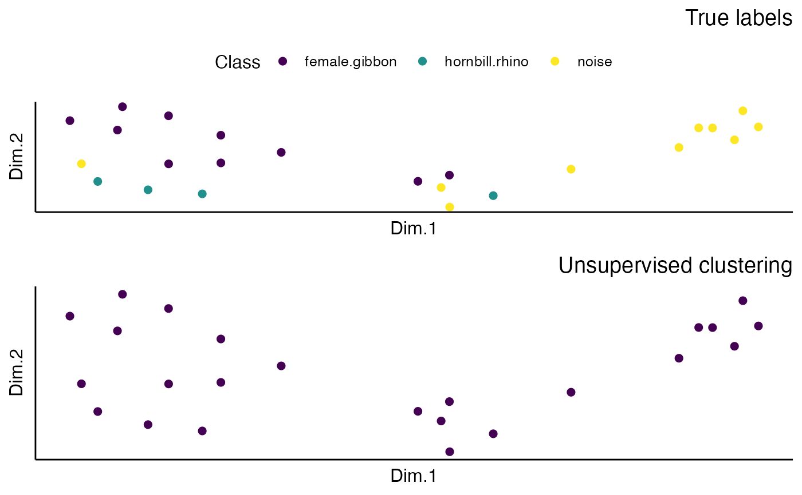

This function loads a fine-tuned Torch model, extracts embeddings from a set of test images, performs dimensionality reduction using UMAP, and creates scatter plots to visualize the embeddings.
extract_embeddings(test_input, model_path, target_class, unsupervised = "TRUE")A character string specifying the path to the directory containing the test images.
A character string specifying the path to the pre-trained PyTorch model file.
A character string specifying the class of interest for cluster analysis.
Logical, indicates whether to assign 'target_class' to a cluster and calculate NMI and corresponding confusion matrix
A list containing the following components:
A combined scatter plot of embeddings, showing class and cluster colors.
Normalized Mutual Information (NMI) score between clustering results and ground truth labels.
A confusion matrix showing classification performance metrics.
Requires a model trained using 'train_CNN_multi' or 'train_CNN_binary', and a directory of spectrogram images created using 'spectrogram_images'.
{
#' Set model directory
trained_models_dir <- system.file("extdata", "trainedresnetmulti/", package = "gibbonNetR")
#' Specify model path
ModelPath <- list.files(trained_models_dir, full.names = TRUE)
# Specify model path
ImageFile <- system.file("extdata", "multiclass/test/", package = "gibbonNetR")
# Function to extract and plot embeddings
result <- extract_embeddings(
test_input = ImageFile,
model_path = ModelPath,
target_class = "female.gibbon",
unsupervised = "TRUE"
)
print(result$EmbeddingsCombined)
}
#> Unupervised clustering for female.gibbon
